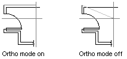

Autodesk AutoCAD 2021: ActiveX Developer's Guide > Control the AutoCAD Environment > About Drawing with Precision (VBA/ActiveX) >
As you draw lines or move objects, you can use Ortho mode to restrict the cursor to the horizontal or vertical axis.
The orthogonal alignment depends on the current snap angle or the UCS. Ortho mode works with activities that require you to specify a second point. You can use Ortho not only to establish vertical or horizontal alignment but also to enforce parallelism or create regular offsets.
By allowing AutoCAD to impose orthogonal restraints, you can draw more quickly. For example, you can create a series of perpendicular lines by turning on Ortho mode before you start drawing. Because the lines are constrained to the horizontal and vertical axes, you can draw faster, knowing that the lines are perpendicular.

As you move the cursor, a rubber-band line that defines the displacement follows the horizontal or vertical axis, depending on which axis is nearest to the cursor. AutoCAD ignores Ortho mode in perspective views, or when you enter coordinates on the command line or specify an object snap.
To turn Ortho mode on or off, use the OrthoOn property. This property requires a Boolean for input. Set to TRUE to turn Ortho mode on, and to FALSE to turn Ortho mode off. For example, the following statement turns Ortho mode on for the active viewport:
ThisDrawing.ActiveViewport.OrthoOn = True